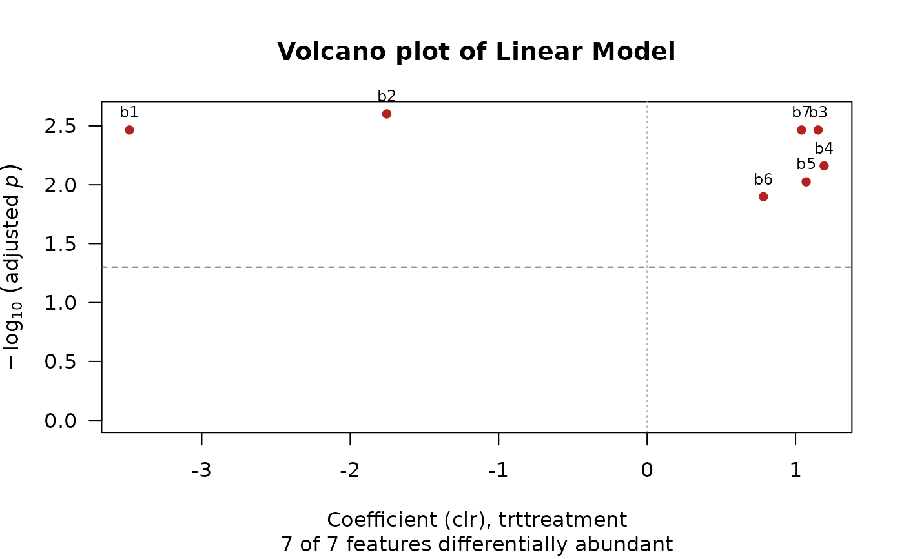

Tests each feature of a normalized count table for differential
abundance with a classical test: Wilcoxon's rank-sum test
(da_wilcoxon()), Welch's t-test (da_ttest()), or a linear model
(da_lm()), with the p-values adjusted for testing every feature. Each
gives, feature by feature, the results of base R's stats::wilcox.test(),
stats::t.test() or stats::lm(), computed in parallel C from a sparse
table without a dense copy.
Usage
da_wilcoxon(
counts,
groups,
data = NULL,
contrast = NULL,
margin = 1L,
norm = "clr",
pseudocount = NULL,
alpha = 0.05,
p_adjust = "holm",
cpus = n_cpus()
)
da_ttest(
counts,
groups,
data = NULL,
contrast = NULL,
margin = 1L,
norm = "clr",
pseudocount = NULL,
var_equal = FALSE,
conf_level = 0.95,
alpha = 0.05,
p_adjust = "holm",
cpus = n_cpus()
)
da_lm(
counts,
formula = NULL,
data = NULL,
groups = NULL,
margin = 1L,
norm = "clr",
pseudocount = NULL,
conf_level = 0.95,
alpha = 0.05,
p_adjust = "holm",
cpus = n_cpus()
)Arguments
- counts
A numeric matrix of non-negative abundances (samples \(\times\) features), or any of the objects listed under Input Types. Negative values are allowed with
norm = 'none', for a table that is already transformed.- groups
The grouping to compare: the name of a column of
data, or a vector with one value per sample.da_lm(): withformula, the name of its term of interest (the oneplot()shows by default); alone, the model~ groups.- data
A data frame of sample metadata, with the variables of
groupsorformula. Its rows are matched to the samples ofcountsby name when both have names, else by position.- contrast
Which samples to compare, as
c(treatment, reference), two values ofgroups. A positive effect means more abundant in the treatment group. UseNAas the reference to compare the treatment group with all other samples pooled; with two named groups, samples in other groups are left out. WithNULL(the default), the treatment is the first group (in sorted order, or a factor's first level) and the reference is all other samples, as fordirmult_ttest().- margin
The margin containing samples.
1if samples are rows,2if samples are columns. Ignored whencountsis a special object class (e.g.phyloseq). Default:1- norm
How to transform each sample before testing:
'clr'(the default),'log'(log relative abundance, "log-TSS"),'rclr','percent'(relative abundance, "TSS"), or any other choice ofnormalize(). With'rclr', zeros are missing values, left out of their feature's test. See Normalization.- pseudocount
For
norm = 'clr'or'log': the value added to every abundance before taking logs.NULL(the default) follows the shared rule: nothing is added whencountshas no zeros, else half the smallest non-zero value, with a warning (see Pseudocount below). Ignored for other norms.- alpha
The significance level of the adjusted p-values:
rejectisp_adjusted <= alpha. Strictly between 0 and 1. Default:0.05.- p_adjust
How to adjust the p-values for testing every feature (separately for each covariate, in
da_lm()): any method ofstats::p.adjust()('holm', the default, as ecodive's other DA methods;'BH', as the benchmarks below;'hochberg','hommel','bonferroni','BY','fdr','none').NaNp-values are left out of the family.- cpus
How many parallel processing threads should be used. The default,
n_cpus(), is the CPU cores this R process may use, within any limits set on it. Results are the same for anycpus.- var_equal
da_ttest():FALSE(the default) for Welch's t-test,TRUEfor Student's, with a pooled variance (t.test()'svar.equal).- conf_level
The confidence level of the intervals (
ci_lower,ci_upper). Strictly between 0 and 1. Default:0.95.- formula
da_lm(): the model, a one-sided formula over the columns ofdata, such as~ status + age, or the same as a string. Anythingstats::model.matrix()accepts may be used. Every factor (and character or logical column) is coded with treatment contrasts, its first level (in sorted order, or a factor's own order) the reference.NULL(the default) is~ groups.
Value
A data frame with a row per feature (da_lm(): per feature and
covariate), in the order of counts, of class
c('ecodive_da_wilcoxon', 'data.frame'),
c('ecodive_da_ttest', 'data.frame'), or
c('ecodive_da_lm', 'data.frame'). Every result starts with feature
(the feature's name, or its index as text) and ends with p_value,
p_adjusted (adjusted with p_adjust), and reject (p_adjusted <= alpha; FALSE where NaN). In between:
da_wilcoxon():w, Wilcoxon's \(W\) (wilcox.test()'s statistic: the treatment's rank sum minus its smallest possible value);auc, \(W / (n_1 n_2)\), the probability that a treatment sample's value is above a reference sample's (ties count half);median_diff, the treatment's median minus the reference's; andmean, the mean of both groups' values.da_ttest():diff, the treatment's mean minus the reference's;ci_lower,ci_upper, its confidence interval;t;dof, the degrees of freedom (Welch-Satterthwaite's, or \(n_1 + n_2 - 2\));pooled_sd, the pooled within-group standard deviation; andmean, the mean of both groups' values.da_lm():covariate, the design column ('(Intercept)'first, then asstats::model.matrix()names them);estimate, its coefficient;se;t; andci_lower,ci_upper. Coefficients that can't be estimated (an aliased column, aslm()'sNA) areNaN.
Effects are differences in the units of norm: of natural logs for
'clr', 'rclr' and 'log' (log fold changes; 'clr' and 'rclr'
relative to each sample's geometric mean), of proportions for
'percent'.
Attributes: method (the function's name), norm, pseudocount,
alpha, p_adjust, log_base (exp(1) for the log norms, NA
otherwise), and for da_wilcoxon() and da_ttest(): contrast (the
treatment and reference groups; the reference is NA when all other
samples were pooled) and n (the number of samples on each side);
da_ttest() and da_lm(): conf_level; da_ttest(): var_equal;
da_lm(): formula, groups (the term of interest, or NULL),
design (the model matrix), and per feature (named by feature):
dof (the residual degrees of freedom), mean (the mean of its
transformed values) and resid_sd (the residual standard deviation,
sigma() of its lm()).
Details
The tests. For each feature, the transformed values of the treatment and reference samples are compared:
da_wilcoxon():wilcox.test(trt, ref), two-sided, with its defaults as of R 4.6.0: when both sides have fewer than 50 values, the exact p-value (stats::pwilcox()without ties; with ties, the exact distribution of the rank sum given the ties, as the Streitberg-Rohmel shift algorithm computes it, twice the smaller tail); otherwise the normal approximation, with the variance corrected for ties and a continuity correction. Before R 4.6.0,wilcox.test()used the normal approximation whenever there were ties, so its p-values differ there. Ties are equal values (withnorm = 'clr', all of a sample's zeros are one value, and zeros tie across samples only with'percent'or'none'). A feature whose values are all equal gets a p-value of 1.da_ttest():t.test(trt, ref, var.equal = var_equal, conf.level = conf_level).da_lm():lm(y ~ ...)of the feature's valuesyon the design offormula, every coefficient tested against 0 with its t statistic (summary.lm()), with intervals asstats::confint(). A factor with several levels gets a test per level against the reference (as ANCOM-BC), not an F-test of the factor as a whole. Withnorm = 'rclr', each feature is fitted to the samples it was observed in, so its degrees of freedom (and, if a level has none of them, its aliased coefficients) are its own.
Where base R stops with an error, these give NaN statistics and
p-values (never rejected) for that feature: a side with no values (with
'rclr') or a single value (Welch's t-test, with a warning when a whole
side of the contrast has one sample), or, for the t-test, a feature
whose values are constant ("data are essentially constant").
Normalization. The tests compare relative abundances, not absolute
ones: with 'clr', relative to each sample's geometric mean, so that a
change in a few abundant features shifts every other feature a little
the other way; with 'percent' or 'log', relative to each sample's
total. ancombc(), ancom() and dirmult_ttest() deal with that
differently. In the benchmarks of Wirbel et al. (2024) on realistic
simulations, the Wilcoxon test, t-test and linear models were among the
few methods to control false discoveries, and adjusting the linear model
for confounders (formula = ~ group + confounder) mitigated them; they
found the clr lowered the Wilcoxon test's sensitivity, while log
relative abundances (norm = 'log') raised the t-test's and the linear
model's. Pelto et al. (2025) found the Wilcoxon test on relative
abundances (norm = 'percent') and the t-test among the most
replicable methods across 69 gut datasets. The default ('clr')
follows the compositional reading of the other DA methods; try the
others with da_test().
Computation. The table is transformed per sample in C, without a
dense copy, and each feature is tested in parallel; each feature's
result depends only on its own values, so results are identical for any
number of cpus. The p-values, from the statistics, are those of base R
to rounding (about \(10^{-12}\)); da_lm() decomposes the design once
(a pivoted Householder QR, as lm()), and again per feature only for
features with missing values.
Pseudocount
The pseudocount parameter is only relevant when norm = 'clr'
or norm = 'log'.
Zeros are undefined in the centered log-ratio (CLR) transformation and
in the log of proportions. If norm is 'clr' or
'log', pseudocount is NULL (the default), and
zeros are detected, the function uses half the minimum non-zero value
(min(x[x>0]) / 2) and issues a warning.
To suppress the warning, provide an explicit value (e.g., 1), or
replace the zeros first with replace_zeros(), whose
result needs no pseudocount.
Why this matters: The choice of pseudocount is not neutral; it acts as a weighting factor that can significantly distort downstream results, especially for sparse datasets. See Gloor et al. (2017) and Kaul et al. (2017) for open-access discussions on the mathematical implications, or Costea et al. (2014) for the impact on community clustering.
See aitchison for references.
Input Types
The counts parameter is designed to accept a simple numeric matrix, but
seamlessly supports objects from the following biological data packages:
phyloseqrbiomSummarizedExperimentTreeSummarizedExperiment
For large datasets, standard matrix operations may be slow. See
vignette('performance') for details on using optimized formats
(e.g. sparse matrices) and parallel processing.
References
Streitberg, B., & Rohmel, J. (1986). Exact distributions for permutation and rank tests: an introduction to some recently published algorithms. Statistical Software Newsletter, 12, 10-17.
Wirbel, J., Essex, M., Forslund, S. K., & Zeller, G. (2024). A realistic benchmark for differential abundance testing and confounder adjustment in human microbiome studies. Genome Biology, 25, 247. doi:10.1186/s13059-024-03390-9
Pelto, J., Auranen, K., Kujala, J. V., & Lahti, L. (2025). Elementary methods provide more replicable results in microbial differential abundance analysis. Briefings in Bioinformatics, 26, bbaf130. doi:10.1093/bib/bbaf130
Examples
# b1 and b2 are less abundant under treatment.
x <- rbind(
c( 20, 110, 100, 101, 100, 103, 104),
c( 33, 110, 120, 100, 101, 100, 102),
c( 12, 110, 100, 110, 100, 50, 90),
c(202, 201, 9, 10, 10, 11, 11),
c(200, 202, 10, 10, 13, 10, 10),
c(203, 201, 14, 10, 10, 13, 12) )
colnames(x) <- paste0('b', 1:7)
grp <- rep(c('treatment', 'placebo'), each = 3)
da_ttest(x, grp, contrast = c('treatment', 'placebo'))
#> # A data.frame: 7 × 11
#> # Welch t-test
#> feature diff ci_lower ci_upper t dof pooled_sd mean p_value
#> <chr> <dbl> <dbl> <dbl> <dbl> <dbl> <dbl> <dbl> <dbl>
#> 1 b1 -3.47 -4.36 -2.57 -16.1 2.07 0.263 0.358 0.0033
#> 2 b2 -1.76 -2.06 -1.45 -20.3 2.56 0.106 1.21 0.000673
#> 3 b3 1.13 0.762 1.5 9.75 3 0.142 -0.269 0.0023
#> 4 b4 1.18 0.746 1.62 10.3 2.29 0.14 -0.32 0.00569
#> 5 b5 1.06 0.703 1.43 8.36 3.78 0.156 -0.292 0.00142
#> 6 b6 0.808 0.183 1.43 4.7 2.44 0.211 -0.389 0.0284
#> 7 b7 1.04 0.875 1.21 17.7 3.89 0.072 -0.299 7.26e-05
#> # … 2 more columns: p_adjusted <dbl>, reject <lgl>
#> # Attributes: method, contrast, n, norm, pseudocount, var_equal, conf_level,
#> # alpha, p_adjust, log_base
# With relative abundances (TSS), as the benchmarks.
da_wilcoxon(x, grp, norm = 'percent', p_adjust = 'BH')
#> # A data.frame: 7 × 8
#> # Wilcoxon Rank-Sum Test
#> feature w auc median_diff mean p_value p_adjusted reject
#> <chr> <dbl> <dbl> <dbl> <dbl> <dbl> <dbl> <lgl>
#> 1 b1 9 1 0.408 0.237 0.1 0.1 FALSE
#> 2 b2 9 1 0.27 0.308 0.1 0.1 FALSE
#> 3 b3 0 0 -0.153 0.0973 0.1 0.1 FALSE
#> 4 b4 0 0 -0.136 0.0944 0.1 0.1 FALSE
#> 5 b5 0 0 -0.135 0.0926 0.1 0.1 FALSE
#> 6 b6 0 0 -0.126 0.0789 0.1 0.1 FALSE
#> 7 b7 0 0 -0.133 0.0909 0.1 0.1 FALSE
#> # Attributes: method, contrast, n, norm, pseudocount, alpha, p_adjust,
#> # log_base
# A linear model, adjusted for a covariate.
meta <- data.frame(trt = grp, age = c(30, 41, 52, 33, 45, 50))
res <- da_lm(x, ~ trt + age, meta, groups = 'trt')
res
#> # A data.frame: 21 × 10
#> # Linear Model
#> feature covariate estimate se t ci_lower ci_upper p_value
#> <chr> <chr> <dbl> <dbl> <dbl> <dbl> <dbl> <dbl>
#> 1 b1 (Intercept) 2.56 0.614 4.18 0.61 4.52 0.025
#> 2 b1 trttreatment -3.49 0.227 -15.4 -4.21 -2.77 0.000596
#> 3 b1 age -0.0111 0.0139 -0.796 -0.0553 0.0332 0.484
#> 4 b2 (Intercept) 1.96 0.26 7.52 1.13 2.78 0.00488
#> 5 b2 trttreatment -1.75 0.096 -18.3 -2.06 -1.45 0.000358
#> 6 b2 age 0.00317 0.00589 0.539 -0.0156 0.0219 0.627
#> 7 b3 (Intercept) -1.35 0.2 -6.73 -1.98 -0.709 0.0067
#> 8 b3 trttreatment 1.15 0.0738 15.6 0.917 1.39 0.000572
#> 9 b3 age 0.012 0.00453 2.65 -0.00243 0.0264 0.0773
#> 10 b4 (Intercept) -1.15 0.332 -3.46 -2.2 -0.0907 0.0408
#> # … 11 more rows
#> # … 2 more columns: p_adjusted <dbl>, reject <lgl>
#> # Use print(x, n = ...) to see more rows
#> # Attributes: method, formula, groups, norm, pseudocount, conf_level, alpha,
#> # p_adjust, log_base, design, dof, mean, resid_sd
plot(res)
